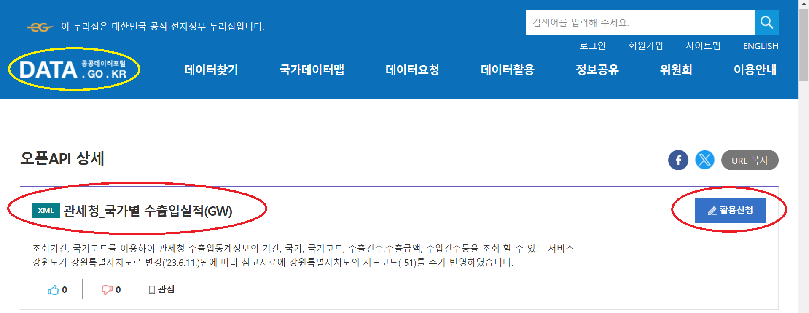

5장 관세청 데이터 API 추출#
NOTE: 이 장에서 예시적으로 소개하는 모든 데이터 추출 작업은 공공데이터포털(data.go.kr)의 해당 사이트에서 자신의 인증키(service Key)를 발급받아야만 실행됩니다.
1. 관세청 오픈 API#
관세청 공공데이터 포탈 오픈 API는 관세청에서 제공하는 다양한 수출입 통계 및 물류 정보를 API 형태로 제공하여, 연구자와 기업이 데이터를 활용할 수 있도록 지원하는 서비스이다. 이 API는 수출입 실적, 관세환율, 운송비용 등 무역과 관련된 다양한 정보를 포함하고 있다.
분야#
수출입 실적 데이터
경제권/국가/대륙별 실적: 특정 경제권, 국가, 대륙의 수출입 통계를 조회.
성질별 실적: 상품의 성질에 따라 중량, 금액 등의 정보를 제공.
세관/시도별 실적: 지역별 무역수지, 수출입 건수 및 금액 정보를 확인.
품목별 실적: 품목별 및 국가별 수출입 중량, 금액, 무역수지 제공.
항구/공항별 실적: 항구 및 공항 단위의 수출입 건수와 금액 제공.
관세 및 물류 관련 데이터
관세환율정보: 과세 환율 및 환율 변동 정보를 제공.
운송비용 정보: 항공 및 해상 수출입 운송비용 평균값 제공.
세관장확인대상물품: 세관 신고 시 확인이 필요한 품목 정보.
특정 수출입 활동 데이터
수출이행내역: 수출신고와 관련된 출항일자, 선적 중량 등 세부 정보.
화물통관진행정보: 수입화물의 통관 진행 상태 및 상세 화물 정보.
리스트#
제목 |
내용 |
|---|---|
• 경제권별 수출입실적(GW) |
조회기간, 대륙경제권통합분류코드를 이용하여 관세청 수출입통계정보의 년월, 경제권, 경제권코드, 수출건수, 수출금액 등을 조회 |
• 국가별 수출입실적(GW) |
조회기간, 국가코드를 이용하여 관세청 수출입통계정보의 기간, 국가, 국가코드, 수출건수, 수출금액, 수입건수 등을 조회 |
• 대륙별 수출입실적(GW) |
조회기간, 대륙코드를 이용하여 관세청 수출입통계정보의 년월, 국가부호명, 국가부호코드, 수출건수, 수출금액, 수입건수 등을 조회 |
• 성질별 수출입실적(GW) |
조회기간, 수출수입구분코드, 수출입성질분류코드를 이용하여 관세청 수출입통계정보의 기간, 수출입구분, 성질명, 성질명코드, 중량, 금액, 국가코드 등을 조회 |
• 성질별 국가별 수출입실적(GW) |
조회기간, 수출입구분코드, 수출입성질분류코드, 국가코드를 이용하여 관세청 수출입통계정보의 성질명, 성질코드, 중량, 금액 등을 조회 |
• 세관별 수출입실적(GW) |
조회기간, 세관구분여부를 이용하여 관세청 수출입통계정보의 년월, 수출건수, 수출금액, 수입건수, 수입미화금액, 무역수지 등을 조회 |
• 시도별 수출입실적(GW) |
조회기간, 시도코드를 이용하여 관세청 수출입통계정보의 무역수지, 수출건수, 수출금액, 수입건수, 수입금액, 기간 등을 조회 |
• 시도별 성질별 수출입실적(GW) |
조회기간, 세부 성질여부, 시도 코드, 수출입 구분코드, 수출입성질분류코드를 이용하여 관세청 수출입통계정보의 수출 성질명, 수출품목건수, 수출금액 등을 조회 |
• 시도별 품목별 수출입실적(GW) |
조회기간, 시도코드, 품목코드를 이용하여 관세청 수출입통계정보의 무역수지, 수출품목건수, 수출금액, 품목코드, 수입품목건수, 수입금액 등을 조회 |
• 신성질별 수출입실적(GW) |
조회기간, 수출입구분코드, 수출입성질통합분류코드를 이용하여 관세청 수출입통계정보의 기간, 수출입구분, 성질명, 성질명코드, 국가명, 국가코드 등을 조회 |
• 신성질별 국가별 수출입실적(GW) |
조회기간, 수출입구분코드, 국가코드를 이용하여 관세청 수출입통계정보의 기간, 수출입구분, 국가명, 국가코드, 성질명, 성질코드 등을 조회 |
• 수출입총괄(GW) |
조회기간을 이용하여 관세청 수출입통계정보의 수리년월일, 수출미화금액, 수입미화금액, 무역수지 등을 조회 |
• 종류별 수출입실적(GW) |
조회기간, 수출입종류코드, 수출입구분코드를 이용하여 관세청 수출입통계정보의 년월, 종류, 종류코드, 건수, 총량, 금액 등을 조회 |
• 품목별 국가별 수출입실적(GW) |
조회기간, 품목코드, 국가코드를 이용하여 관세청 수출입통계정보의 품목명, HS코드, 수입/수출 중량 및 금액, 무역수지 등을 조회 |
• 품목별 수출입실적(GW) |
조회기간, 품목코드를 이용하여 관세청 수출입통계정보의 기간, 품목명, HS코드, 수입/수출 중량 및 금액, 무역수지 등을 조회 |
• 항구 공항별 수출입실적(GW) |
조회기간, 항구공항지역코드를 이용하여 관세청 수출입통계정보의 항구 공항 지역명, 수출건수, 수출금액, 수입건수, 수입금액 등을 조회 |
• 관세환율정보(GW) |
관세법 제18조에 따른 과세환율을 조회. 적용개시일자, 주간환율구분코드를 이용하여 국가부호, 화폐단위명, 환율 등을 조회 |
• 세관장확인대상물품(GW) |
품목코드, 수출입구분코드를 이용하여 세관장확인대상물품의 HS 부호, 신고인 확인법령코드 등을 조회 |
• 수출이행내역 |
수출신고별 수리일자, 출항일자 등 수출이행 내역과 선적중량, 통간중량 등의 잔량 정보를 제공하는 서비스. UNI PASS 홈페이지 회원 가입 후 Open API 서비스 신청이 필요함. |
• 항공 수입 운송비용 |
기업이 세관에 수입 신고하는 과정에서 항공수입 kg당 평균 운송비용(원)을 산출한 데이터. FOB 조건의 인천공항 도착 수입 건으로, 별도 운임표를 적용하여 신고건은 제외됨. |
• 해상수출입 운송비용 |
기업이 세관에 수출입 신고하는 과정에서 생산된 운임정보를 화물정보와 연계하여 컨테이너당 평균 수출입 운송비용을 산출·공표하는 데이터. 거래조건은 CIF와 CFR, FOB를 포함하며, FCL 형태의 40피트 일반화물 운송용 컨테이너 조건임. |
• 화물통관진행정보 |
수입화물의 통관 진행 상태 및 선박국적, 선사항공사, 적재항명, 포장개수 등의 화물 정보를 제공하는 서비스. UNI-PASS 회원 가입 후 Open API 서비스 신청이 필요함. |
2. API 접근 방법#
공공데이터 포탈을 통해 관세청이 제공하는 오픈 API 사이트에 접속한다. 아래는 관세청 국가별 수출입실적(GW) 사이트를 예시적으로 보여준다.

API 접근을 위해서는 먼저 인증키(service key)를 발급받아야 한다. 위 화면 오른쪽 “활용신청”을 클릭한다. API 인증키를 발급받기 위해서는 먼저 공공데이터 포탈에 로그인할 것을 요구한다. 즉 공공데이터 포탈에 로그인을 한 다음에 API 인증키를 발급받는다.
주의: 각각의 오픈 API별로 활용신청을 해야 한다. 가령 “관세청 품목별 수출입실적” 활용신청을 승인받았다고 해도 “관세청 품목별 수출입실적”에 접근하기 위해서는 또다시 활용신청을 해야 한다. 인증키는 동일하더라고 API마다 각각 신청해 승인을 받는 방식을 취하고 있다.
3. 데이터 다운로드 예제#
이 절에서는 관세청의 오픈 API 중 5개에 대해 API를 호출하고 데이터를 추출하는 파이썬 코드를 제시한다. 모두 동일한 포맷을 하고 있어 이 코드를 이용하면 관세청의 다른 API에 대해서도 파이썬 코드를 만들 수 있을 것이다.
<관세청 API 호출 및 데이터 추출 절차> |
|---|
• API 엔드포인트 URL 접속 |
• 인증키 제시 |
• 요청 파라미터 설정 |
• GET 요청을 보내고 응답 받기 |
• XML 응답을 파싱하여 처리 |
• 응답 데이터를 데이터프레임으로 변환 |
사실 관세청의 오픈 API 사이트 상에서도 데이터를 추출하는 작업을 할 수 있는데, 우리처럼 파이썬 코드를 사용하면 데이터를 데이터 프레임으로 받을 수 있기 때문에 곧바로 후속 작업에 들어갈 수 있는 간편함이 있다.
UN Comtrade API 데이터의 경우 데이터를 JSON 형식으로 제공하는데, 관세청 API 데이터는 XML 형식으로 제공한다.(부록 1: XML과 JSON 비교 참조)
관세청 API 추출 절차에서 XML 응답을 파싱하는 작업에 대해서는 부록 2에 ChatGPT의 설명이 나와 있다.
국가별 수출입#
조회기간, 국가코드를 이용하여 관세청 수출입통계정보의 기간, 국가, 국가코드, 수출건수,수출금액, 수입건수등을 조회할 수 있는 서비스
import requests
import xml.etree.ElementTree as ET
import pandas as pd
# API 엔드포인트 URL
url = "https://apis.data.go.kr/1220000/nationtrade/getNationtradeList"
# service key
key = "fXh1tRb9XehEGKVGBfGpGwSRuTQpRxCwnyNuW3puoNc8uR31ejAsvvFedZxJ3F1gUW17GNSJ+uAvqcfOHysYGw==" # 인코딩되지 않은 원본을 사용함
# 요청 파라미터 설정
params = {
"serviceKey": key,
"strtYymm": "202301", # 시작 연월
"endYymm": "202312" # 종료 연월, 시작과 종료의 조회기간은 1년이내 기간만 가능
}
# GET 요청을 보내고 응답 받기
response = requests.get(url, params=params)
# XML 응답을 파싱하여 처리
root = ET.fromstring(response.content)
result_code = root.findtext('.//resultCode')
result_msg = root.findtext('.//resultMsg')
# 응답 데이터를 데이터프레임으로 변환
if result_code == "00": # 성공 코드
items = root.findall('.//item')
data = []
for item in items:
data.append({
"Year": item.findtext('year'),
"State Code": item.findtext('statCd'),
"Country": item.findtext('statCdCntnKor1'),
"Export Count": item.findtext('expCnt'),
"Export Dollar": item.findtext('expDlr'),
"Import Count": item.findtext('impCnt'),
"Import Dollar": item.findtext('impDlr'),
"Balance of Payments": item.findtext('balPayments')
})
df = pd.DataFrame(data)
df
# 필요한 경우 데이터프레임을 CSV로 저장
# df.to_csv("nationtrade_data.csv", index=False)
Year State Code Country Export Count Export Dollar Import Count Import Dollar Balance of Payments
0 2023.01 CN 중국 80983 9207638675 659903 13140060660 -3932421985
1 2023.01 US 미국 162190 8058603985 1603285 6995422573 1063181412
2 2023.01 VN 베트남 42470 3768005258 80624 2401963268 1366041990
3 2023.01 JP 일본 138563 2295203445 225442 3953682365 -1658478920
4 2023.01 IN 인도 17162 1452738349 13744 543955228 908783121
... ... ... ... ... ... ... ... ...
2813 2023.12 LS 레소토 0 0 4 60032 -60032
2814 2023.12 IM 맨섬 0 0 2 270 -270
2815 2023.12 MS 몬트세라트 0 0 1 5643 -5643
2816 2023.12 NU 니우에 0 0 4 27968 -27968
2817 2023.12 IO 영령 인도양 0 0 0 677 -677
2818 rows × 8 columns
품목별 수출입실적#
조회기간, 품목코드를 이용하여 관세청 수출입통계정보의 기간, 품목명, HS코드, 수입/수출 중량 및 금액, 무역수지 등을 조회할 수 있는 서비스
import requests
import xml.etree.ElementTree as ET
import pandas as pd
# API 엔드포인트 URL
url = "https://apis.data.go.kr/1220000/Itemtrade/getItemtradeList"
# service key
key = "fXh1tRb9XehEGKVGBfGpGwSRuTQpRxCwnyNuW3puoNc8uR31ejAsvvFedZxJ3F1gUW17GNSJ+uAvqcfOHysYGw==" # 인코딩되지 않은 원본을 사용함
# 요청 파라미터 설정
params = {
"serviceKey": key,
"strtYymm": "202301", # 시작 연월
"endYymm": "202312" # 종료 연월, 시작과 종료의 조회기간은 1년이내 기간만 가능
}
# GET 요청을 보내고 응답 받기
response = requests.get(url, params=params)
# XML 응답을 파싱하여 처리
root = ET.fromstring(response.content)
result_code = root.findtext('.//resultCode')
result_msg = root.findtext('.//resultMsg')
print(f"Result Code: {result_code}")
print(f"Result Message: {result_msg}")
# 응답 데이터를 데이터프레임으로 변환
if result_code == "00": # 성공 코드
items = root.findall('.//item')
data = []
for item in items:
data.append({
"Year": item.findtext('year'),
"HS Code": item.findtext('hsCode'),
"statKor": item.findtext('statKor'),
"Export Dollar": item.findtext('expDlr'),
"Export Weight": item.findtext('expWgt'),
"Import Dollar": item.findtext('impDlr'),
"Import Weight": item.findtext('impWgt'),
"Balance of Payments": item.findtext('balPayments')
})
df = pd.DataFrame(data)
df
Result Code: 00
Result Message: 정상서비스.
Year HS Code statKor Export Dollar Export Weight Import Dollar Import Weight Balance of Payments
0 2023.01 0101219000 기타 418 20 0 0 418
1 2023.01 0101291000 경주말 10000 550 478708 6553 -468708
2 2023.01 0101299000 기타 0 0 215031 3000 -215031
3 2023.01 0102212000 육우(肉牛) 11 0 0 0 11
4 2023.01 0104209000 기타 374 2 0 0 374
... ... ... ... ... ... ... ... ...
115165 2023.12 9706901000 도자기류 0 0 105294 765 -105294
115166 2023.12 9706902000 악기류 0 0 1003477 156 -1003477
115167 2023.12 9706903000 기타 0 0 312193 873 -312193
115168 2023.12 9999999290 - 0 0 321 545680 -321
115169 총계 - - 630206878583 188242319049 642191074352 553833535720 -11984195769
115170 rows × 8 columns
수출입총괄#
조회기간를 이용하여 관세청 수출입통계정보의 수리년월일, 수출미화금액, 수입미화금액, 무역수지등을 조회할 수 있는 서비스
import requests
import xml.etree.ElementTree as ET
import pandas as pd
# API 엔드포인트 URL
url = "https://apis.data.go.kr/1220000/Newtrade/getNewtradeList"
# service key
key = "fXh1tRb9XehEGKVGBfGpGwSRuTQpRxCwnyNuW3puoNc8uR31ejAsvvFedZxJ3F1gUW17GNSJ+uAvqcfOHysYGw==" # 인코딩되지 않은 원본을 사용함
# 요청 파라미터 설정
params = {
"serviceKey": key,
"strtYymm": "202301", # 시작 연월
"endYymm": "202312" # 종료 연월, 시작과 종료의 조회기간은 1년이내 기간만 가능
}
# GET 요청을 보내고 응답 받기
response = requests.get(url, params=params)
# response.text
# XML 응답을 파싱하여 처리
root = ET.fromstring(response.content)
result_code = root.findtext('.//resultCode')
result_msg = root.findtext('.//resultMsg')
print(f"Result Code: {result_code}")
print(f"Result Message: {result_msg}")
# 응답 데이터를 데이터프레임으로 변환
if result_code == "00": # 성공 코드
items = root.findall('.//item')
data = []
for item in items:
data.append({
"Year": item.findtext('year'),
"Export Count": item.findtext('expCnt'),
"Export Dollar": item.findtext('expDlr'),
"Import Count": item.findtext('impCnt'),
"Import Dollar": item.findtext('impDlr'),
"Balance of Payments": item.findtext('balPayments')
})
df = pd.DataFrame(data)
df
Result Code: 00
Result Message: 정상서비스.
Year Export Count Export Dollar Import Count Import Dollar Balance of Payments
0 2023.01 898445 46339145202 3286710 59037258670 -12698113468
1 2023.02 932903 49994592894 3306771 55370497927 -5375905033
2 2023.03 1076334 54882484169 3713236 59635920268 -4753436099
3 2023.04 891503 49430879351 3469134 51940136654 -2509257303
4 2023.05 905038 52054194622 3583435 54251194151 -2196999529
5 2023.06 1017356 54297753717 3572062 53055480023 1242273694
6 2023.07 903488 50457775880 3677608 48738113632 1719662248
7 2023.08 936778 51994073841 3687493 51009758152 984315689
8 2023.09 1013530 54650691297 3621292 50972524564 3678166733
9 2023.10 945046 54989950051 3963093 53440582476 1549367575
10 2023.11 1137959 55561090016 4123915 51997805276 3563284740
11 2023.12 1040051 57573192986 4198705 53122854463 4450338523
12 총계 11698431 632225824026 44203454 642572126256 -10346302230
품목별 국가별 수출입실적#
조회기간, 품목코드, 국가코드를 이용하여 관세청 수출입통계정보의 품목명, HS코드, 수입/수출 중량 및 금액, 무역수지 등을 조회할 수 있는 서비스.
신청가능 트래픽:
개발계정: 새로운 앱이나 서비스를 개발할 때 사용하는 계정으로, 기본적으로 하루에 10,000회까지 요청(트래픽)을 보낼 수 있음.
운영계정: 이미 개발된 서비스를 실제로 운영할 때 사용하는 계정으로 활용사례(어떤 방식으로 데이터를 활용하고 있는지에 대한 설명이나 예시)를 등록하면, 기본 트래픽 한도를 넘어 추가로 더 많은 트래픽을 신청할 수 있음.
import requests
import xml.etree.ElementTree as ET
import pandas as pd
# API 엔드포인트 URL
url = "http://apis.data.go.kr/1220000/nitemtrade/getNitemtradeList"
# service key
key = "fXh1tRb9XehEGKVGBfGpGwSRuTQpRxCwnyNuW3puoNc8uR31ejAsvvFedZxJ3F1gUW17GNSJ+uAvqcfOHysYGw==" # 인코딩되지 않은 원본을 사용함
# 요청 파라미터 설정
params = {
"serviceKey": key,
"strtYymm": "202301", # 시작 연월
"endYymm": "202312", # 종료 연월, 시작과 종료의 조회기간은 1년이내 기간만 가능
"cntyCd": "US" # 품목코드(hsSgn) 혹은 국가코드 중 1개 이상은 입력해야 함
}
# GET 요청을 보내고 응답 받기
response = requests.get(url, params=params)
# XML 응답을 파싱하여 처리
root = ET.fromstring(response.content)
result_code = root.findtext('.//resultCode')
result_msg = root.findtext('.//resultMsg')
print(f"Result Code: {result_code}")
print(f"Result Message: {result_msg}")
# 응답 데이터를 데이터프레임으로 변환
if result_code == "00": # 성공 코드
items = root.findall('.//item')
data = []
for item in items:
data.append({
"Year": item.findtext('year'),
"State Code": item.findtext('statCd'),
"HS Code": item.findtext('hsCd'),
"statKor": item.findtext('statKor'),
"Export Dollar": item.findtext('expDlr'),
"Export Weight": item.findtext('expWgt'),
"Import Dollar": item.findtext('impDlr'),
"Import Weight": item.findtext('impWgt'),
"Balance of Payments": item.findtext('balPayments')
})
df = pd.DataFrame(data)
df
Result Code: 00
Result Message: 정상서비스.
Year State Code HS Code statKor Export Dollar Export Weight Import Dollar Import Weight Balance of Payments
0 총계 - - - 115466847827 21069852632 71093568029 47456134253 44373279798
1 2023.01 US 0101219000 기타 10 1 0 0 10
2 2023.01 US 0101291000 경주말 10000 550 0 0 10000
3 2023.01 US 0104209000 기타 38 0 0 0 38
4 2023.01 US 0105111000 번식용 0 0 965680 1178 -965680
... ... ... ... ... ... ... ... ... ...
77610 2023.12 US 9706103000 기타 0 0 23 1 -23
77611 2023.12 US 9706901000 도자기류 0 0 621 5 -621
77612 2023.12 US 9706902000 악기류 0 0 30487 6 -30487
77613 2023.12 US 9706903000 기타 0 0 26807 64 -26807
77614 2023.12 US 9999999290 - 0 0 0 121129 0
77615 rows × 9 columns
신성질별 국가별 수출입실적#
조회기간, 수출입구분코드, 국가코드를 이용하여 관세청 수출입통계정보의 기간, 수출입구분, 국가명, 국가코드, 성질명, 성질코드 등을 조회할 수 있는 서비스.
import requests
import xml.etree.ElementTree as ET
import pandas as pd
# API 엔드포인트 URL
url = "http://apis.data.go.kr/1220000/nnewtempertrade/getNnewtempertradeList"
# service key
key = "fXh1tRb9XehEGKVGBfGpGwSRuTQpRxCwnyNuW3puoNc8uR31ejAsvvFedZxJ3F1gUW17GNSJ+uAvqcfOHysYGw==" # 인코딩되지 않은 원본을 사용함
# 요청 파라미터 설정
params = {
"serviceKey": key,
"strtYymm": "202301", # 시작 연월
"endYymm": "202312", # 종료 연월, 시작과 종료의 조회기간은 1년이내 기간만 가능
"imexTpcd": "1", # 수출입구분코드(required) 1 수출 2 수입
"imexTmprUnfcClsfCd": "110201", # 수출입성질통합분류코드(required) 세분류 또는 세세분류코드
"cntyCd": "US" # required
}
# GET 요청을 보내고 응답 받기
response = requests.get(url, params=params)
# XML 응답을 파싱하여 처리
root = ET.fromstring(response.content)
result_code = root.findtext('.//resultCode')
result_msg = root.findtext('.//resultMsg')
print(f"Result Code: {result_code}")
print(f"Result Message: {result_msg}")
# 응답 데이터를 데이터프레임으로 변환
if result_code == "00": # 성공 코드
items = root.findall('.//item')
data = []
for item in items:
data.append({
"Year": item.findtext('year'),
"State Code": item.findtext('statCd'),
"Imp/Exp": item.findtext('impexp'),
"Goods Code": item.findtext('godsCd'),
"Goods(Kor)": item.findtext('godsKor'),
"Weight": item.findtext('wgt')
})
df = pd.DataFrame(data)
df
Result Code: 00
Result Message: 정상서비스.
Year State Code Imp/Exp Goods Code Goods(Kor) Weight
0 2023.01 US 수출 11020101 (말) 551
1 2023.01 US 수출 11020190 (기타 산 동물) 896
2 2023.02 US 수출 11020101 (말) 1500
3 2023.02 US 수출 11020190 (기타 산 동물) 747
4 2023.03 US 수출 11020190 (기타 산 동물) 4088
5 2023.04 US 수출 11020101 (말) 1
6 2023.04 US 수출 11020190 (기타 산 동물) 790
7 2023.05 US 수출 11020190 (기타 산 동물) 544
8 2023.06 US 수출 11020190 (기타 산 동물) 531
9 2023.07 US 수출 11020190 (기타 산 동물) 623
10 2023.08 US 수출 11020190 (기타 산 동물) 501
11 2023.09 US 수출 11020190 (기타 산 동물) 543
12 2023.10 US 수출 11020101 (말) 1801
13 2023.10 US 수출 11020190 (기타 산 동물) 682
14 2023.11 US 수출 11020190 (기타 산 동물) 699
15 2023.12 US 수출 11020190 (기타 산 동물) 1449
부록 1: XML과 JSON 비교#
출처: ChatGPT
(1) 구조#
XML (eXtensible Markup Language)
데이터를 태그(tag)로 감싸서 표현합니다.
계층적 구조를 가지며, 닫는 태그(
</tag>)가 필요합니다.태그 이름이 데이터를 설명하는 역할을 합니다.
속성(attribute)을 사용해 추가 정보를 담을 수 있습니다.
예시:
<person> <name>John Doe</name> <age>30</age> <city>New York</city> </person>JSON (JavaScript Object Notation)
데이터를 키-값 쌍으로 표현합니다.
중괄호(
{})와 대괄호([])를 사용해 객체와 배열을 나타냅니다.데이터가 가벼워서 전송이 빠릅니다.
태그 대신 필드 이름으로 데이터를 설명합니다.
예시:
{ "name": "John Doe", "age": 30, "city": "New York" }
(2) 가독성 및 용이성#
XML: 태그를 사용해 구조를 명확하게 나타낼 수 있지만, 상대적으로 문서가 길어질 수 있고, 파싱이 복잡할 수 있습니다.
JSON: 가볍고 간결하여, 데이터를 읽고 쓰기가 쉬워 프로그래밍 언어에서 다루기 용이합니다.
(3) 용도#
XML: 주로 문서나 데이터베이스, 복잡한 데이터 구조를 저장하거나 웹 서비스와 같은 데이터 교환을 위한 표준으로 사용됩니다.
JSON: 웹 애플리케이션에서 서버와 클라이언트 간의 데이터 교환이나, RESTful API에서 주로 사용됩니다.
(4) 다른 데이터 형식들#
CSV (Comma-Separated Values)
형식: 각 데이터 항목이 쉼표로 구분된 텍스트 파일 형식.
예시:
name,age,city John Doe,30,New York Jane Smith,25,Los Angeles
용도: 주로 스프레드시트나 간단한 데이터베이스, 텍스트 기반의 데이터 교환에 사용됩니다.
YAML (YAML Ain’t Markup Language)
형식: 들여쓰기를 사용해 계층적 데이터를 표현합니다. JSON과 유사하지만, 더 가독성이 좋습니다.
예시:
person: name: John Doe age: 30 city: New York
용도: 설정 파일, 데이터 시리얼라이제이션, 애플리케이션 설정 등에 사용됩니다.
Protocol Buffers (Protobuf)
형식: Google이 개발한 바이너리 형식으로, 데이터 교환을 위해 컴팩트하고 빠른 방법을 제공합니다.
예시:
message Person { string name = 1; int32 age = 2; string city = 3; }용도: 성능이 중요한 애플리케이션, 특히 분산 시스템에서 데이터 교환을 위해 사용됩니다.
(5) 결론#
XML과 JSON: 주로 웹 서비스에서 데이터를 교환하는 데 널리 사용되며, 각각의 용도와 특성에 맞게 선택됩니다.
다른 형식: CSV는 단순한 데이터 저장에, YAML은 설정 파일에, Protobuf는 성능이 중요한 환경에서 사용됩니다. 이 외에도 다양한 데이터 형식들이 상황에 맞게 사용됩니다.
부록 2: XML 파싱#
출처: ChatGPT
(1) XML#
XML(eXtensible Markup Language)은 데이터 구조를 정의하기 위한 마크업 언어입니다. XML은 데이터를 태그(tag)로 감싸서 구조화된 형태로 표현하며, 웹 서비스나 API에서 데이터를 주고받는 데 많이 사용됩니다.
예시
<item>
<year>2023.01</year>
<statCd>CN</statCd>
<expCnt>80983</expCnt>
<expDlr>9207638675</expDlr>
</item>
위 예시에서 <item>은 데이터의 한 덩어리(즉, 항목)를 나타내며, 그 안에 <year>, <statCd>, <expCnt>, <expDlr> 같은 태그들이 있습니다. 이 태그들 사이에 있는 텍스트가 실제 데이터입니다.
(2) XML 파싱 의미#
파싱(parsing): 데이터를 이해할 수 있는 구조로 분석하거나 해석하는 과정을 의미합니다. 영어 단어 “parsing”에서 유래한 용어입니다.
XML을 파싱한다는 것은 XML 형식으로 주어진 데이터를 읽고, 각 태그 안에 있는 데이터를 추출하여 코드에서 사용할 수 있는 형태로 만드는 것을 뜻합니다.
예를 들어:
위의 XML 데이터를 파싱하면, year, statCd, expCnt, expDlr와 같은 값을 프로그램에서 사용할 수 있게 됩니다.
year = "2023.01"
stat_cd = "CN"
exp_cnt = 80983
exp_dlr = 9207638675
왜 XML을 파싱해야 할까?
API에서 데이터를 제공할 때, 데이터를 효율적으로 주고받기 위해 XML 같은 구조화된 형식을 사용합니다. 그러나 프로그램에서는 XML 그 자체로 데이터를 사용하기 어렵기 때문에, 태그 안에 있는 실제 데이터를 꺼내어(즉, 파싱하여) 사용 가능한 형태로 만드는 과정이 필요합니다. 이 과정을 통해 XML 데이터를 분석하거나, 다른 형태로 변환하여 활용할 수 있습니다.